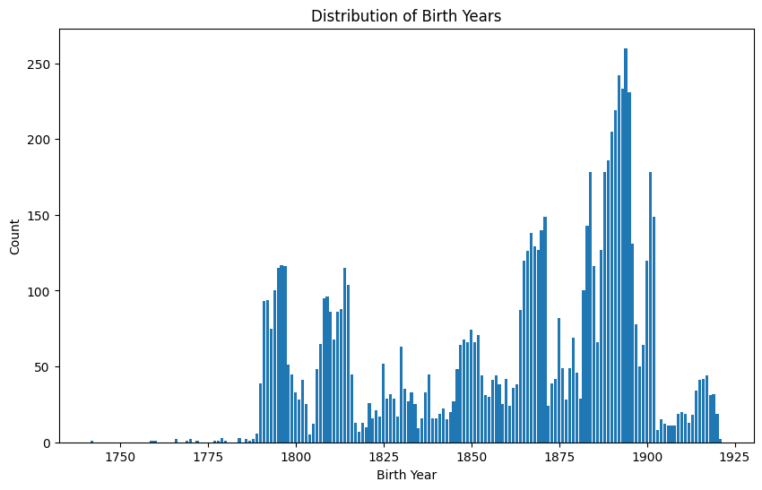
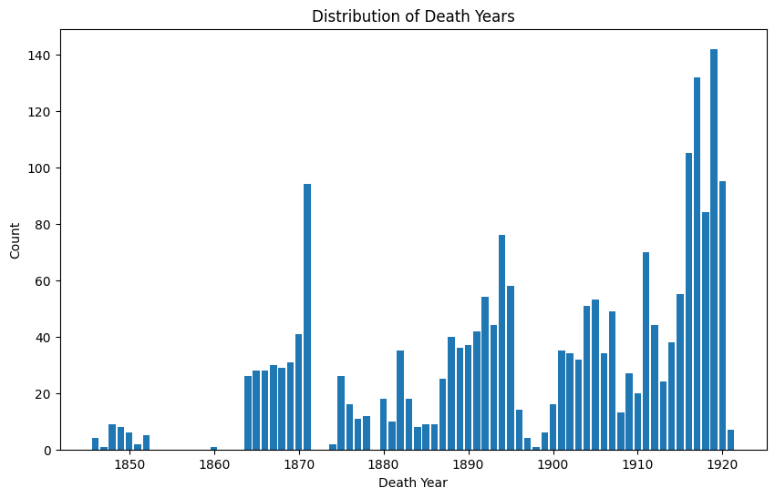
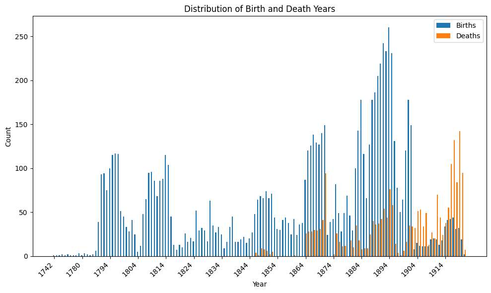

import pandas as pdpersonas = pd.read_csv("../data/clean/personas.csv")
personas.head()/var/folders/37/816y3tg93hn7pnnrd0c33c_00000gn/T/ipykernel_71360/641431091.py:1: DtypeWarning: Columns (13,14,15) have mixed types. Specify dtype option on import or set low_memory=False.
personas = pd.read_csv("../data/clean/personas.csv")| event_idno | original_identifier | persona_type | name | birth_place | birth_date | legitimacy_status | birth_date_precision | lastname | persona_idno | social_condition | marital_status | resident_in | death_place | death_date | death_date_precision | gender | |
|---|---|---|---|---|---|---|---|---|---|---|---|---|---|---|---|---|---|
| 0 | bautizo-1 | APAucará-LB-L001_B001 | baptized | domingo | NaN | 1790-08-04 | legitimo | exact | ayquipa | persona-1 | NaN | NaN | NaN | NaN | NaN | NaN | male |
| 1 | bautizo-1 | APAucará-LB-L001_B001 | father | lucas | NaN | NaN | NaN | NaN | ayquipa | persona-2 | NaN | NaN | NaN | NaN | NaN | NaN | male |
| 2 | bautizo-1 | APAucará-LB-L001_B001 | mother | sevastiana | NaN | NaN | NaN | NaN | quispe | persona-3 | NaN | NaN | NaN | NaN | NaN | NaN | female |
| 3 | bautizo-1 | APAucará-LB-L001_B001 | godfather | vicente | NaN | NaN | NaN | NaN | guamani | persona-4 | NaN | NaN | NaN | NaN | NaN | NaN | male |
| 4 | bautizo-2 | APAucará-LB-L001_B002 | baptized | dominga | NaN | 1790-08-04 | legitimo | exact | lulia | persona-5 | NaN | NaN | NaN | NaN | NaN | NaN | female |
import matplotlib.pyplot as plt# bar chart of birth years
personas['birth_year'] = pd.to_datetime(personas['birth_date'], errors='coerce').dt.year.astype('Int64')
fig, ax = plt.subplots(figsize=(10,6))
counts_births = personas['birth_year'].value_counts().sort_index()
ax.bar(counts_births.index, counts_births.values)
ax.set_xlabel('Birth Year')
ax.set_ylabel('Count')
ax.set_title('Distribution of Birth Years')
plt.show()
personas['death_year'] = pd.to_datetime(personas['death_date'], errors='coerce').dt.year.astype('Int64')
fig, ax = plt.subplots(figsize=(10,6))
counts_deaths = personas['death_year'].value_counts().sort_index()
ax.bar(counts_deaths.index, counts_deaths.values)
ax.set_xlabel('Death Year')
ax.set_ylabel('Count')
ax.set_title('Distribution of Death Years')
plt.show()
import numpy as np
all_years = sorted(set(counts_births.index) | set(counts_deaths.index))
x = np.arange(len(all_years))
width = 0.4
births_vals = [counts_births.get(y, 0) for y in all_years]
deaths_vals = [counts_deaths.get(y, 0) for y in all_years]
fig, ax = plt.subplots(figsize=(10,6))
ax.bar(x - width/2, births_vals, width=width, label='Births')
ax.bar(x + width/2, deaths_vals, width=width, label='Deaths')
# Show only every 10th year label to avoid clutter
step = 10
tick_positions = x[::step]
tick_labels = [str(all_years[i]) for i in range(0, len(all_years), step)]
ax.set_xticks(tick_positions)
ax.set_xticklabels(tick_labels, rotation=45, ha='right')
ax.set_xlabel('Year')
ax.set_ylabel('Count')
ax.set_title('Distribution of Birth and Death Years')
ax.legend()
plt.tight_layout()
plt.show()
personas['death_date_precision'].value_counts()death_date_precision
exact 2092
estimated 22
day_adjusted 3
month 1
Name: count, dtype: int64bautismos = pd.read_csv("../data/clean/bautismos_clean.csv")
matrimonios = pd.read_csv("../data/clean/matrimonios_clean.csv")libres = personas.loc[personas['social_condition'] == 'libre']
bautismos['original_identifier'] = bautismos['file'].apply(lambda x: "-".join(x.split()))
bautismos['original_identifier'] = bautismos['original_identifier'] + "_" + bautismos['identifier']libres_bap = bautismos.loc[bautismos['original_identifier'].isin(libres['original_identifier'])]
libres_bap| file | identifier | event_type | event_date | baptized_name | baptized_birth_place | baptized_birth_date | baptized_legitimacy_status | father_name | father_lastname | ... | godmother_social_condition | event_place | event_geographic_descriptor_1 | event_geographic_descriptor_2 | event_geographic_descriptor_3 | event_geographic_descriptor_4 | event_date_precision | baptized_birth_date_precision | baptized_lastname | original_identifier | |
|---|---|---|---|---|---|---|---|---|---|---|---|---|---|---|---|---|---|---|---|---|---|
| 34 | APAucará LB L001 | B035 | Bautizo | 1791-03-07 | ramon | NaN | 1790-08-31 | hijo legitimo | eusebio | yanquihuarcaya | ... | NaN | NaN | Aucara | NaN | NaN | NaN | exact | exact | yanquihuarcaya | APAucará-LB-L001_B035 |
| 55 | APAucará LB L001 | B056 | Bautizo | 1791-06-02 | manuel | NaN | 1791-05-30 | hijo legitimo | manuel | marcca cuzco | ... | NaN | NaN | Aucara | NaN | NaN | NaN | exact | exact | marcca cuzco | APAucará-LB-L001_B056 |
| 77 | APAucará LB L001 | B078 | Bautizo | 1791-07-24 | buena bentura | NaN | 1791-07-14 | hijo legitimo | andres | roxas | ... | NaN | NaN | Aucara | NaN | NaN | NaN | exact | exact | roxas | APAucará-LB-L001_B078 |
| 82 | APAucará LB L001 | B083 | Bautizo | 1791-08-31 | bacilio | NaN | 1791-06-14 | hijo legitimo | bernardo | pisarro | ... | NaN | NaN | Aucara | NaN | NaN | NaN | exact | exact | pisarro | APAucará-LB-L001_B083 |
| 85 | APAucará LB L001 | B086 | Bautizo | 1791-09-22 | luis | NaN | 1791-09-10 | hijo legitimo | vicente | aparco | ... | NaN | NaN | Aucara | NaN | NaN | NaN | exact | exact | aparco | APAucará-LB-L001_B086 |
| 92 | APAucará LB L001 | B093 | Bautizo | 1791-10-15 | edguardo | NaN | 1791-10-13 | hijo natural | NaN | NaN | ... | NaN | NaN | Aucara | NaN | NaN | NaN | exact | exact | coyllo | APAucará-LB-L001_B093 |
| 95 | APAucará LB L001 | B096 | Bautizo | 1791-10-28 | raphael | NaN | 1791-10-25 | hijo natural | NaN | NaN | ... | NaN | NaN | Aucara | NaN | NaN | NaN | exact | exact | sosa | APAucará-LB-L001_B096 |
| 133 | APAucará LB L001 | B134 | Bautizo | 1792-03-12 | feliciana | NaN | 1792-02-21 | hija legitima | xavier | quespi | ... | NaN | NaN | Aucara | Chacralla | NaN | NaN | exact | exact | quespi | APAucará-LB-L001_B134 |
| 147 | APAucará LB L001 | B148 | Bautizo | 1792-05-08 | juana | NaN | 1792-05-06 | hija legitima | phelipe | damian | ... | NaN | NaN | Aucara | Ishua | NaN | NaN | exact | exact | damian | APAucará-LB-L001_B148 |
| 223 | APAucará LB L001 | B224 | Bautizo | 1793-02-13 | faustino | NaN | 1793-02-12 | hijo legitimo | rudecindo | ramires | ... | NaN | NaN | Aucara | NaN | NaN | NaN | exact | exact | ramires | APAucará-LB-L001_B224 |
| 238 | APAucará LB L001 | B239 | Bautizo | 1793-05-25 | manuel | NaN | 1793-05-13 | hijo legitimo | ylario | ramires | ... | NaN | NaN | Aucara | NaN | NaN | NaN | exact | exact | ramires | APAucará-LB-L001_B239 |
| 242 | APAucará LB L001 | B243 | Bautizo | 1793-06-26 | bonifacio | NaN | 1793-05-24 | hijo legitimo | manuel | albares | ... | NaN | NaN | Aucara | Chacralla | NaN | NaN | exact | exact | albares | APAucará-LB-L001_B243 |
| 542 | APAucará LB L001 | B543 | Bautizo | 1796-04-01 | cesareo | NaN | 1796-02-26 | hijo legitimo | joseph | ortis | ... | NaN | NaN | Aucara | NaN | NaN | NaN | exact | exact | ortis | APAucará-LB-L001_B543 |
| 616 | APAucará LB L001 | B617 | Bautizo | 1797-01-15 | manuel | NaN | 1797-01-10 | hijo legitimo | luis | cuevas | ... | NaN | NaN | Aucara | NaN | NaN | NaN | exact | exact | cuevas | APAucará-LB-L001_B617 |
| 657 | APAucará LB L001 | B658 | Bautizo | 1797-05-18 | alexandro | NaN | 1797-03-15 | hijo natural | pasqual | peres | ... | NaN | NaN | Aucara | NaN | NaN | NaN | exact | exact | peres | APAucará-LB-L001_B658 |
| 780 | APAucará LB L001 | B781 | Bautizo | 1799-01-04 | clemente | NaN | 1799-01-02 | hijo legitimo | manuel | rojas | ... | NaN | NaN | Aucara | NaN | NaN | NaN | exact | exact | rojas | APAucará-LB-L001_B781 |
| 798 | APAucará LB L001 | B799 | Bautizo | 1799-02-20 | clemente | NaN | 1798-11-13 | hijo legitimo | manuel | roxas | ... | NaN | NaN | Aucara | NaN | NaN | NaN | exact | exact | roxas | APAucará-LB-L001_B799 |
| 800 | APAucará LB L001 | B801 | Bautizo | 1799-08-08 | dominga | NaN | 1799-08-04 | hija legitima | romualdo | osorio | ... | NaN | NaN | Aucara | NaN | NaN | NaN | exact | exact | osorio | APAucará-LB-L001_B801 |
| 802 | APAucará LB L001 | B803 | Bautizo | 1799-06-28 | marcos | NaN | 1799-06-20 | hijo legitimo | dionicio | chabes | ... | NaN | NaN | Aucara | NaN | NaN | NaN | exact | exact | chabes | APAucará-LB-L001_B803 |
| 817 | APAucará LB L001 | B818 | Bautizo | 1799-08-30 | antonio | NaN | 1799-08-17 | hijo legitimo | benito | tipi | ... | NaN | NaN | Aucara | NaN | NaN | NaN | exact | exact | tipi | APAucará-LB-L001_B818 |
| 1463 | APAucará LB L001 | B1464 | Bautizo | 1811-04-02 | francisca simeona | NaN | 1811-03-25 | Tributaria de Aucara. Hija legitima | damian | crus | ... | "libre" | Chacralla, pueblo | Aucara | Chacralla | NaN | NaN | exact | inferred_from_age | crus | APAucará-LB-L001_B1464 |
21 rows × 30 columns
matrimonios['original_identifier'] = matrimonios['file'].apply(lambda x: "-".join(x.split()))
matrimonios['original_identifier'] = matrimonios['original_identifier'] + "_" + matrimonios['identifier']libres_mat = matrimonios.loc[matrimonios['original_identifier'].isin(libres['original_identifier'])]
libres_mat| file | identifier | event_type | event_date | husband_name | husband_lastname | husband_social_condition | husband_marital_status | husband_birth_date | husband_birth_place | ... | event_geographic_descriptor_1 | event_geographic_descriptor_2 | event_geographic_descriptor_3 | event_geographic_descriptor_4 | event_geographic_descriptor_5 | event_geographic_descriptor_6 | event_date_precision | husband_birth_date_precision | wife_birth_date_precision | original_identifier | |
|---|---|---|---|---|---|---|---|---|---|---|---|---|---|---|---|---|---|---|---|---|---|
| 466 | APAucará LM L001 | M467 | Matrimonio | 1761-02-04 | alexo | nolasco | NaN | soltero | NaN | Ishua | ... | Aucara | Ishua | NaN | NaN | NaN | NaN | exact | NaN | NaN | APAucará-LM-L001_M467 |
| 470 | APAucará LM L001 | M471 | Matrimonio | 1761-05-14 | calisto | pisarro | libres | soltero | NaN | Aucara | ... | Aucara | NaN | NaN | NaN | NaN | NaN | exact | NaN | NaN | APAucará-LM-L001_M471 |
| 475 | APAucará LM L001 | M476 | Matrimonio | 1761-10-10 | joseph | espinosa | libres | soltero | NaN | Pampamarca | ... | Aucara | Pampamarca | NaN | NaN | NaN | NaN | exact | NaN | NaN | APAucará-LM-L001_M476 |
| 496 | APAucará LM L001 | M497 | Matrimonio | 1763-11-14 | antonio | ramos | originarios y tributarios del dicho pueblo de ... | viudo | NaN | NaN | ... | Aucara | Ishua | San Jeronimo | NaN | NaN | NaN | exact | NaN | NaN | APAucará-LM-L001_M497 |
4 rows × 59 columns
libres_bap.to_csv("../data/stats/libres_bautismos.csv", index=False)
libres_mat.to_csv("../data/stats/libres_matrimonios.csv", index=False)matrimonios_raw = pd.read_csv("../data/raw/matrimonios.csv")
matrimonios_raw.head()| Secuencia | Unidad Documental Compuesta (a la que pertenece) | Identificador (es recomendable seguir una secuencia numeral como la mostrada en los ejemplos) | Título (incluir un título breve para cada documento) | Nivel de descripción | Folio inicial del documento (convertir como se muestra abajo) | Folio final del documento (convertir como se muestra abajo) | Imagen inicial (estos valores serán añadidos cuando comienze el proceso de revisión de imágenes) | Imagen final (estos valores serán añadidos cuando comienze el proceso de revisión de imágenes) | Tipo de evento | ... | Lugar de casamiento | Descriptor Geográfico 1 | Descriptor Geográfico 2 | Descriptor Geográfico 3 | Descriptor Geográfico 4 | Descriptor Geográfico 5 | Descriptor Geográfico 6 | Notas adicionales del documento | Caracterísitcas físicas (Estado de Convervación de los materiales fisicos) | Historia de revisión (de los materiales digitalizados) | |
|---|---|---|---|---|---|---|---|---|---|---|---|---|---|---|---|---|---|---|---|---|---|
| 0 | 1 | APAucará LM L001 | M001 | Aucara. Don José Roca con Doña Juana Rogrigues... | Unidad Documental Simple | 1r | 1r | DSC_0666 | DSC_0666 | Matrimonio | ... | Aucara, santa iglesia | Aucara | Huamanga | Coracora | NaN | NaN | NaN | Los tres testigos tienen la condición de don. | Bueno | Registrado por Grecia Roque en 2023 |
| 1 | 2 | APAucará LM L001 | M002 | Aucara. Esteban Castillo con Ambrocia Tasqui. | Unidad Documental Simple | 1r | 1r | DSC_0666 | DSC_0666 | Matrimonio | ... | Aucara, santa iglesia | Aucara | Colca | NaN | NaN | NaN | NaN | NaN | Regular. Presenta algunas manchas de humedad. | Registrado por Grecia Roque en 2023 |
| 2 | 3 | APAucará LM L001 | M003 | Alexandro Ramires con Sipriana Coillo. Pampamarca | Unidad Documental Simple | 1v | 1v | DSC_0667 | DSC_0667 | Matrimonio | ... | Aucara, santa iglesia | Aucara | Pampamarca | NaN | NaN | NaN | NaN | NaN | Bueno | Registrado por Grecia Roque en 2023 |
| 3 | 4 | APAucará LM L001 | M004 | Jose Cuchu con Cacimira Flores de Pampamarca. | Unidad Documental Simple | 1v | 1v | DSC_0667 | DSC_0667 | Matrimonio | ... | Pampamarca, santa iglesia, anexo | Aucara | Pampamarca | NaN | NaN | NaN | NaN | NaN | Regular. Presenta algunas manchas de humedad. | Registrado por Grecia Roque en 2023 |
| 4 | 5 | APAucará LM L001 | M005 | Pampama. [Pampamarca]. Domingo Tito con Petron... | Unidad Documental Simple | 2r | 2r | DSC_0667 | DSC_0667 | Matrimonio | ... | Pampamarca, santa iglesia, anexo | Aucara | Pampamarca | NaN | NaN | NaN | NaN | NaN | Bueno | Registrado por Grecia Roque en 2023 |
5 rows × 66 columns
file_str = "Identificador (es recomendable seguir una secuencia numeral como la mostrada en los ejemplos)"
identifier_str = "Unidad Documental Compuesta (a la que pertenece)"
matrimonios_raw['original_identifier'] = matrimonios_raw[identifier_str].apply(lambda x: "-".join(x.split())) + "_" + matrimonios_raw[file_str]
matrimonios_raw.head()| Secuencia | Unidad Documental Compuesta (a la que pertenece) | Identificador (es recomendable seguir una secuencia numeral como la mostrada en los ejemplos) | Título (incluir un título breve para cada documento) | Nivel de descripción | Folio inicial del documento (convertir como se muestra abajo) | Folio final del documento (convertir como se muestra abajo) | Imagen inicial (estos valores serán añadidos cuando comienze el proceso de revisión de imágenes) | Imagen final (estos valores serán añadidos cuando comienze el proceso de revisión de imágenes) | Tipo de evento | ... | Descriptor Geográfico 1 | Descriptor Geográfico 2 | Descriptor Geográfico 3 | Descriptor Geográfico 4 | Descriptor Geográfico 5 | Descriptor Geográfico 6 | Notas adicionales del documento | Caracterísitcas físicas (Estado de Convervación de los materiales fisicos) | Historia de revisión (de los materiales digitalizados) | original_identifier | |
|---|---|---|---|---|---|---|---|---|---|---|---|---|---|---|---|---|---|---|---|---|---|
| 0 | 1 | APAucará LM L001 | M001 | Aucara. Don José Roca con Doña Juana Rogrigues... | Unidad Documental Simple | 1r | 1r | DSC_0666 | DSC_0666 | Matrimonio | ... | Aucara | Huamanga | Coracora | NaN | NaN | NaN | Los tres testigos tienen la condición de don. | Bueno | Registrado por Grecia Roque en 2023 | APAucará-LM-L001_M001 |
| 1 | 2 | APAucará LM L001 | M002 | Aucara. Esteban Castillo con Ambrocia Tasqui. | Unidad Documental Simple | 1r | 1r | DSC_0666 | DSC_0666 | Matrimonio | ... | Aucara | Colca | NaN | NaN | NaN | NaN | NaN | Regular. Presenta algunas manchas de humedad. | Registrado por Grecia Roque en 2023 | APAucará-LM-L001_M002 |
| 2 | 3 | APAucará LM L001 | M003 | Alexandro Ramires con Sipriana Coillo. Pampamarca | Unidad Documental Simple | 1v | 1v | DSC_0667 | DSC_0667 | Matrimonio | ... | Aucara | Pampamarca | NaN | NaN | NaN | NaN | NaN | Bueno | Registrado por Grecia Roque en 2023 | APAucará-LM-L001_M003 |
| 3 | 4 | APAucará LM L001 | M004 | Jose Cuchu con Cacimira Flores de Pampamarca. | Unidad Documental Simple | 1v | 1v | DSC_0667 | DSC_0667 | Matrimonio | ... | Aucara | Pampamarca | NaN | NaN | NaN | NaN | NaN | Regular. Presenta algunas manchas de humedad. | Registrado por Grecia Roque en 2023 | APAucará-LM-L001_M004 |
| 4 | 5 | APAucará LM L001 | M005 | Pampama. [Pampamarca]. Domingo Tito con Petron... | Unidad Documental Simple | 2r | 2r | DSC_0667 | DSC_0667 | Matrimonio | ... | Aucara | Pampamarca | NaN | NaN | NaN | NaN | NaN | Bueno | Registrado por Grecia Roque en 2023 | APAucará-LM-L001_M005 |
5 rows × 67 columns
libres_mat_raw = matrimonios_raw.loc[matrimonios_raw['original_identifier'].isin(libres['original_identifier'])]
libres_mat_raw.head()| Secuencia | Unidad Documental Compuesta (a la que pertenece) | Identificador (es recomendable seguir una secuencia numeral como la mostrada en los ejemplos) | Título (incluir un título breve para cada documento) | Nivel de descripción | Folio inicial del documento (convertir como se muestra abajo) | Folio final del documento (convertir como se muestra abajo) | Imagen inicial (estos valores serán añadidos cuando comienze el proceso de revisión de imágenes) | Imagen final (estos valores serán añadidos cuando comienze el proceso de revisión de imágenes) | Tipo de evento | ... | Descriptor Geográfico 1 | Descriptor Geográfico 2 | Descriptor Geográfico 3 | Descriptor Geográfico 4 | Descriptor Geográfico 5 | Descriptor Geográfico 6 | Notas adicionales del documento | Caracterísitcas físicas (Estado de Convervación de los materiales fisicos) | Historia de revisión (de los materiales digitalizados) | original_identifier | |
|---|---|---|---|---|---|---|---|---|---|---|---|---|---|---|---|---|---|---|---|---|---|
| 466 | 467 | APAucará LM L001 | M467 | Alexo Nolasco con Ysidora Guamani libre | Unidad Documental Simple | NaN | NaN | DSC_0760 | DSC_0760 | Matrimonio | ... | Aucara | Ishua | NaN | NaN | NaN | NaN | Cada contrayente tiene dos testigos, "fueron t... | Regular | Registrado por Grecia Roque en 2023 | APAucará-LM-L001_M467 |
| 470 | 471 | APAucará LM L001 | M471 | Calisto Pisarro con Fransisca Tixeros livres | Unidad Documental Simple | NaN | NaN | DSC_0761 y DSC_0762 | DSC_0761 y DSC_0762 | Matrimonio | ... | Aucara | NaN | NaN | NaN | NaN | NaN | Cada contrayente tiene dos testigos, "fueron t... | Regular. Hay manchas de humedad. | Registrado por Grecia Roque en 2023 | APAucará-LM-L001_M471 |
| 475 | 476 | APAucará LM L001 | M476 | Joseph Espinosa con Maria Coillo libres | Unidad Documental Simple | NaN | NaN | DSC_0763 | DSC_0763 | Matrimonio | ... | Aucara | Pampamarca | NaN | NaN | NaN | NaN | Cada contrayente tiene dos testigos, "fueron t... | Regular. Hay manchas de humedad. | Registrado por Grecia Roque en 2023 | APAucará-LM-L001_M476 |
| 496 | 497 | APAucará LM L001 | M497 | Antonio Ramos con Petrona Supanta | Unidad Documental Simple | NaN | NaN | DSC_0771 | DSC_0771 | Matrimonio | ... | Aucara | Ishua | San Jeronimo | NaN | NaN | NaN | Este registro dice que todos son "originarios ... | Regular. Hay manchas de humedad. | Registrado por Grecia Roque en 2023 | APAucará-LM-L001_M497 |
4 rows × 67 columns
libres_mat_raw.to_csv("../data/stats/libres_matrimonios_raw.csv", index=False)bautismos_raw = pd.read_csv("../data/raw/bautismos.csv")
bautismos_raw.head()| Secuencia | Unidad Documental Compuesta (a la que pertenece) | Identificador (es recomendable seguir una secuencia numeral como la mostrada en los ejemplos) | Título (incluir un título breve para cada documento) | Folio inicial del documento (convertir como se muestra abajo) | Folio final del documento (convertir como se muestra abajo) | Imagen inicial (estos valores serán añadidos cuando comienze el proceso de revisión de imágenes) | Imagen final (estos valores serán añadidos cuando comienze el proceso de revisión de imágenes) | Tipo de evento | Fecha aaaa-mm-dd | ... | Condición de la madrina | Lugar de bautizo | Notas adicionales del documento | Descriptor Geográfico 1 | Descriptor Geográfico 2 | Descriptor Geográfico 3 | Descriptor Geográfico 4 | 5 | Características físicas (Estado de conservación de los materiales físicos) | Historia de revisión (de los materiales digitalizados) | |
|---|---|---|---|---|---|---|---|---|---|---|---|---|---|---|---|---|---|---|---|---|---|
| 0 | 1.0 | APAucará LB L001 | B001 | Bautizo. Domingo. Tributarios | 3r | 3r | IMG_7000a | IMG_7000a | Bautizo | 1790-10-04 | ... | NaN | Pampamarca, iglesia | NaN | Aucara | Pampamarca | NaN | NaN | NaN | Regular | Registrado por Edwin Gonzales en 2023 |
| 1 | 2.0 | APAucará LB L001 | B002 | Bautizo. Dominga. Tributarios | 3r | 3r | IMG_7000a | IMG_7000a | Bautizo | 1790-10-06 | ... | NaN | Pampamarca, iglesia | NaN | Aucara | Pampamarca | NaN | NaN | NaN | Regular | Registrado por Edwin Gonzales en 2023 |
| 2 | 3.0 | APAucará LB L001 | B003 | Bautizo. Bartola. Tributarios | 3r | 3r | IMG_7000a | IMG_7000a | Bautizo | 1790-10-07 | ... | NaN | Pampamarca, iglesia | NaN | Aucara | Pampamarca | NaN | NaN | NaN | Regular | Registrado por Edwin Gonzales en 2023 |
| 3 | 4.0 | APAucará LB L001 | B004 | Bautizo. Francisca | 3v | 3v | IMG_7000b | IMG_7000b | Bautizo | 1790-10-20 | ... | NaN | Aucara, iglesia | Abreviatura poco visible en el margen | Aucara | NaN | NaN | NaN | NaN | Regular | Registrado por Edwin Gonzales en 2023 |
| 4 | 5.0 | APAucará LB L001 | B005 | Bautizo. Pedro | 3v | 3v | IMG_7000b | IMG_7000b | Bautizo | 1790-10-20 | ... | NaN | Aucara, iglesia | Margen roto y manchado de tinta | Aucara | NaN | NaN | NaN | NaN | Regular | Registrado por Edwin Gonzales en 2023 |
5 rows × 36 columns
bautismos_raw['original_identifier'] = bautismos_raw[identifier_str].apply(lambda x: "-".join(x.split())) + "_" + bautismos_raw[file_str]
bautismos_raw.head()| Secuencia | Unidad Documental Compuesta (a la que pertenece) | Identificador (es recomendable seguir una secuencia numeral como la mostrada en los ejemplos) | Título (incluir un título breve para cada documento) | Folio inicial del documento (convertir como se muestra abajo) | Folio final del documento (convertir como se muestra abajo) | Imagen inicial (estos valores serán añadidos cuando comienze el proceso de revisión de imágenes) | Imagen final (estos valores serán añadidos cuando comienze el proceso de revisión de imágenes) | Tipo de evento | Fecha aaaa-mm-dd | ... | Lugar de bautizo | Notas adicionales del documento | Descriptor Geográfico 1 | Descriptor Geográfico 2 | Descriptor Geográfico 3 | Descriptor Geográfico 4 | 5 | Características físicas (Estado de conservación de los materiales físicos) | Historia de revisión (de los materiales digitalizados) | original_identifier | |
|---|---|---|---|---|---|---|---|---|---|---|---|---|---|---|---|---|---|---|---|---|---|
| 0 | 1.0 | APAucará LB L001 | B001 | Bautizo. Domingo. Tributarios | 3r | 3r | IMG_7000a | IMG_7000a | Bautizo | 1790-10-04 | ... | Pampamarca, iglesia | NaN | Aucara | Pampamarca | NaN | NaN | NaN | Regular | Registrado por Edwin Gonzales en 2023 | APAucará-LB-L001_B001 |
| 1 | 2.0 | APAucará LB L001 | B002 | Bautizo. Dominga. Tributarios | 3r | 3r | IMG_7000a | IMG_7000a | Bautizo | 1790-10-06 | ... | Pampamarca, iglesia | NaN | Aucara | Pampamarca | NaN | NaN | NaN | Regular | Registrado por Edwin Gonzales en 2023 | APAucará-LB-L001_B002 |
| 2 | 3.0 | APAucará LB L001 | B003 | Bautizo. Bartola. Tributarios | 3r | 3r | IMG_7000a | IMG_7000a | Bautizo | 1790-10-07 | ... | Pampamarca, iglesia | NaN | Aucara | Pampamarca | NaN | NaN | NaN | Regular | Registrado por Edwin Gonzales en 2023 | APAucará-LB-L001_B003 |
| 3 | 4.0 | APAucará LB L001 | B004 | Bautizo. Francisca | 3v | 3v | IMG_7000b | IMG_7000b | Bautizo | 1790-10-20 | ... | Aucara, iglesia | Abreviatura poco visible en el margen | Aucara | NaN | NaN | NaN | NaN | Regular | Registrado por Edwin Gonzales en 2023 | APAucará-LB-L001_B004 |
| 4 | 5.0 | APAucará LB L001 | B005 | Bautizo. Pedro | 3v | 3v | IMG_7000b | IMG_7000b | Bautizo | 1790-10-20 | ... | Aucara, iglesia | Margen roto y manchado de tinta | Aucara | NaN | NaN | NaN | NaN | Regular | Registrado por Edwin Gonzales en 2023 | APAucará-LB-L001_B005 |
5 rows × 37 columns
libres_bap_raw = bautismos_raw.loc[bautismos_raw['original_identifier'].isin(libres['original_identifier'])]
libres_bap_raw.to_csv("../data/stats/libres_bautismos_raw.csv", index=False)